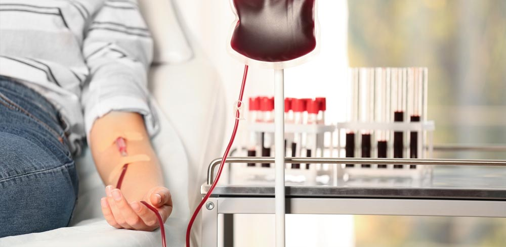

DARK BLOOD BANK
*Use our Cuponcode:RED and Donate Your Blood You Get a 1000rs Cashback Cuponcode Offer Till Jan End Applicable*
HOME
BLOOD BANK HOSPITAL
DONER LIST
ABOUT
9 Rarest Blood Types in the World

Give the gift of life
Donate Blood